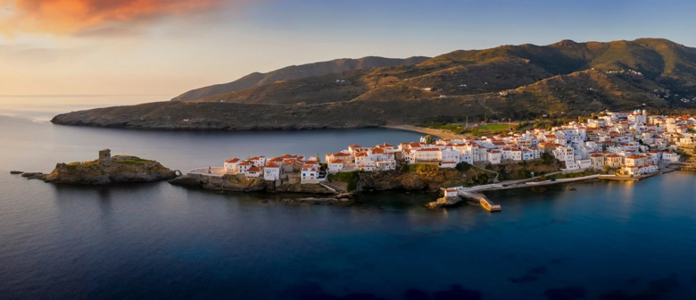
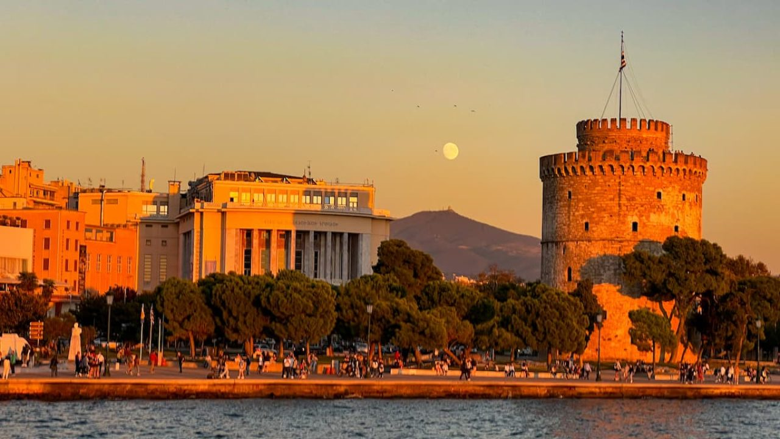
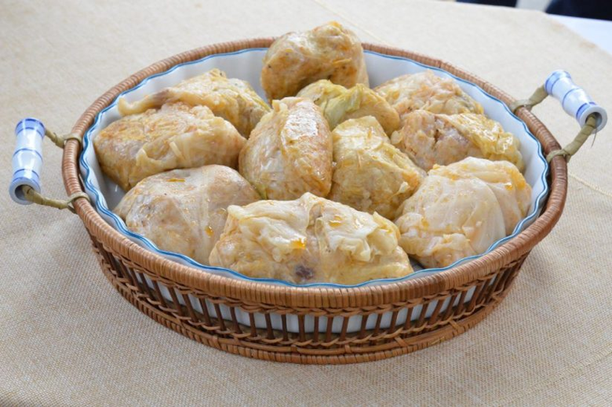

About Greece
Greece is a country known for its rich history, stunning landscapes, and vibrant culture. Located in southeastern Europe, it is bordered by Albania, North Macedonia, and Bulgaria to t he north, and the Aegean, Ionian, and Mediterranean Seas to the south, east, and west. Greece has been a center of ancient civilization, giving birth to democracy, philosophy, and the arts. The legacy of Ancient Greece is visible through its ruins, such as the Acropolis in Athens, the Temple of Apollo in Delphi, and the Palace of Knossos in Crete. The country boasts a diverse geography, from the rugged mountains and fertile plains of the mainland to its beautiful islands, including Crete, Rhodes, and the Cyclades, such as vSantorini and Mykonos. These islands are famous for their pristine beaches, charming white-washed buildings, and vibrant nightlife.
Go on trails

The Zeus Trail is one of the most famous hiking routes in Greece, located on Mount Olympus, the mythical home of the ancient Greek gods. This is just one of many trails in the beautiful land of Greece. This trail connects several key points on the mountain, including the Mytikas Summit, which is the highest peak of Olympus. According to Greek mythology, it was here that Zeus and the other gods resided, making this trail a popular destination for those interested in both nature and mythology. The hike offers breathtaking views, rich flora, and fauna, and a sense of ancient mystery. The Zeus Trail begins from the Prionia refuge, which can be accessed by car, and continues up towards the Refuge A, passing through the Skala and Skolio summits. The entire trail is challenging, suitable for experienced hikers, and provides spectacular panoramic views of the surrounding plains and the Aegean Sea.
Duration: 6-8 hours
Difficulty: Moderate to Difficult
Distance: 6 miles
Various trails
Andros
The northernmost island of the Cyclades, has a long maritime tradition. Explore sandy beaches, rocky coastlines, water springs, hills and green plains! The capital of the island, Chοra (which means “main village”) is home to many famous Greek captains and ship owners; Take a look at the remarkable combination of medieval, neoclassical and island style houses. Walk the village down the flights of stairs, around the public square and its narrow streets, visit some remarkable churches and museums, and take a break in its beautiful shops, cafes and restaurants. Don’t miss the Frankish castle located on an islet across the main island connected with an arched stone bridge dating back to the 13th century.
Visit Thessaloniki
The metropolis of Thessaloniki has a population of over a million and is the biggest city in the northern part of Greece. It is built by Thermaïkos and Strymonikos Gulf, on fertile grounds resting beside the Rivers of Axios, Gallikos and Loudias, as well as the lakes Koroneia and Volvi. Findings prove that Thessaloniki has been inhabited since prehistoric times, marked by multiculturalism, yet its present day modernized state is charmingly intertwined with archaeological sites, byzantine churches and other significant monuments from the past. Thessaloniki is a busy, bustling city at all times of the day but especially at night when it becomes brighter and colorful.
Book NowThe Cuisine of Kozani
The culinary tradition of Kozani is a blend of influences from the different populations that settled in the area or passed through. This tradition was moulded by the availability of produce, as determined by the soil and the climate. Giaprakia, the most popular local dish, which used to be enjoyed on the Christmas table only, is now served in several restaurants, especially during the winter months. It is made with leaves of pickled white cabbage (locally known as lachanarmia) stuffed with rice, minced meat, usually half pork & half beef, and plenty of allspice berries, which the locals call moschopipero. The more adventurous diners add pork lard or pancetta and of course lots of paprika.